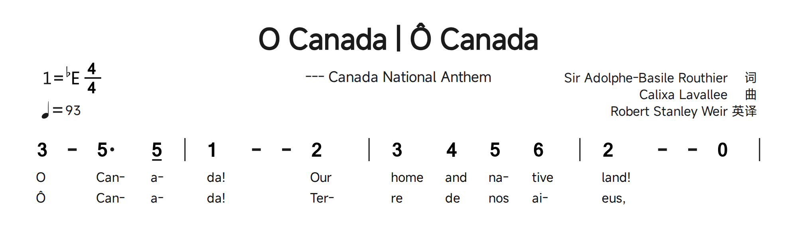

13. JPS 结构与约定
JPS 是普通文本，通常以 .jps 为扩展名。乐谱由描述头及曲 Q:、词 C: 组成。一个 Q 行对应一行印刷曲谱；随后 C 行依附该曲行。带数字前缀标识声部。空行会结束当前谱行组并开始新的谱行组，是结构分隔符，不只是阅读留白。以 # 开始的整行是注释；Q 行中的 # 是升音记号，不是注释。
原规范将 V、B、D、P 列为必需字段。虽然 章鱼简谱可容忍不完整草稿，完整乐谱仍应包含这些字段。建议使用大写字段/行前缀及严格区分大小写的小写字面量 [fenye]。注意描述头和主体的区别；重复 B/Z 字段有特定排版用途。未知语法可能被保留并提示，不代表能按预期渲染。
分三步阅读源码
先读描述头中的标题、调号、拍号和速度；再只读 Q 行：数字与休止符是音乐事件，后缀修饰前面的主音，小节线分隔音乐；最后读 C 行，将歌词位置与音符逐一核对。源码顺序也决定排版顺序：移动整行 Q 会改变音乐位置，把 C 从原行移走则可能使歌词依附另一行。主体应从曲开始，不要先放无所属的歌词。
纯 JPS 与保存文档外层
示例 .jps 可能是 JSON 文档：code 字段保存 JPS，page_config 字段保存页面设置。在 JPS 源码面板中编辑音乐内容，不必编辑 JSON 标点。手册下载摘录采用 UTF-8 纯 JPS，可直接打开或复制，包含描述头与主体。要精确复现图中的间距，应打开标明名称的示例以恢复其页面设置。
14. 描述头
| 字段 | 值示例 | 含义 |
|---|---|---|
| V | 1.0 | Script version / 脚本版本 |
| B | Practice | Title; repeats become subtitles / 标题，重复成为副标题 |
| Z | Name - composer | Author/credit; multiple right-aligned lines / 作者，可多行右对齐 |
| D | E$ | Key; A-G with # sharp or $ flat / 调号，A-G 加 # 或 $ |
| P | 4/4 | Meter; alternatives may follow / 拍号，可附其他拍号 |
| J | 90 | Tempo number and/or descriptive text / 速度数值及/或文字 |
| X | 10 | Score sequence number / 乐谱序号 |
V: 1.0
B: 主标题
B: 副标题
Z: 作词者 词
Z: 作曲者 曲
D: F#
P: 4/4 (2/4 1/4)
J: 90 欢快地
X: 10调号使用大写 A-G，例如 C、F#、E$。多个 B 行在主标题下显示副标题；多个 Z 行将作者文字列于右上方。P 用斜线分隔分子/分母，空格与括号可列出辅助拍号。J 可以是每分钟拍数、文字或两者。规范将 X 定义为乐谱序号，不是声部编号；当前章鱼简谱会保留 X 描述头，但不会将其渲染到谱面。描述头用于记谱，速度字段不会启用播放。
必需字段与重复字段
完整曲谱应写 V、B、D、P。V: 1.0 是语法版本，不是章鱼简谱的程序版本。首个 B 为居中主标题，后续 B 为居中副标题；每个 Z 产生一行右对齐署名。J 可选，表示速度；X 可保存目录序号。把这些字段放在首个 Q 之前。未完成稿可能仍可预览，但不应以缺字段的形式作为通用文档。
调号、拍号、速度与注释
D: F# 与 D: E$ 分别表示升、降调；使用大写 A-G 和半角 #/$。P: 6/8 指定拍号，P: 4/4 (2/4 1/4) 还列出辅助拍号，但不能代替小节线上的局部换拍。J: 90 表示数字速度，J: 欢快的 表示文字，也可兼用。整行以 # 开头是源码注释；Q 内的 4# 却是升音。带引号的注释会印在谱上，源码注释不会。
描述头排版与多语言标题
第二个 B 是副标题；三个 Z 分别表示署名。D: E$ 显示降 E 调，P 指定 4/4，J 指定数字速度。标题中的竖线是普通文字，不是音乐小节线。
示例库：O-Canada.jps · 源码行 13-15。 摘录采用 Linux 版本的应用字体集渲染，省略页面空白。 下载此 JPS 摘录
JPS 源码
V: 1.0
B: O Canada | Ô Canada
B: --- Canada National Anthem
D: E$
P: 4/4
J: 93
Z: Sir Adolphe-Basile Routhier 词
Z: Calixa Lavallee 曲
Z: Robert Stanley Weir 英译
Q: 3 - 5. 5/ | 1 - - 2 | 3 4 5 6 | 2 - - 0 |
C: O /Can- /a- /da~! Our/ home / and /na-tive/ land~!
C: Ô Can- /a- /da~! Ter- /re /de /nos /ai- /eus~,
